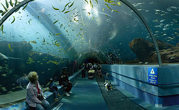

El Acuario
Los Acuario tienen una personalidad fuerte y atractiva. Hay dos tipos de Acuario: uno es tímido, sensible, y paciente. El otro tipo es exuberante, vivo y puede llegar a esconder las profundidades de su personalidad debajo de un aire frívolo. Ambos tipos de Acuario tienen una fuerza de convicción y de la verdad muy fuerte y son tan honestos que saben cambiar sus opiniones si aparecen pruebas que muestran lo contrario de lo que pensaban antes. Los Acuario son capaces de ver los dos lados de un argumento por lo que son uno de los signos más tolerantes y sin prejuicios de todo el zodiaco. Están abiertos a la verdad y dispuestos a aprender de todos. Un Acuario es humano, sincero, refinado e idealista. Saben ser perseverantes y expresarse con razón, moderación y, a veces, humor. Casi todos los Acuario son inteligentes, claros y lógicos. Muchos son imaginativos y psíquicos. A veces sienten la necesidad de retirarse del mundo para meditar o pensar. Se niegan a seguir la multitud. A pesar de la personalidad abierta de los acuarios y de su deseo de ayudar a la humanidad, no suelen hacer amigos con facilidad. No se entregan su alma con facilidad.